청암 박태준, 그가 걸어온 길을 들여다 보다
1953년 여름 한국전쟁이 휴전으로 멈추는 즈음에 멀쩡히 살아남은 한 청년 장교가 자신의 영혼에다 조각칼로 파듯이 ‘짧은 인생을 영원 조국에’라는 좌우명을 새겼다.
1977년 5월 조업과 건설을 동시에 감당해 나가는 영일만 포항제철에서 절박한 목소리로 외치는 한 중년 사내가 있었다. “우리 세대는 희생하는 세대다. 이것저것 개인을 위해서는 생각할 수 없고 다음 세대를 위해 순교자적으로 희생하는 세대다.” 그가 박태준이었다.
그리고 그는 도무지 낡을 줄 모르는 그 좌우명과 그 신념으로 공공을 위한 삶의 길을 개척하면서 다른 쪽으로 한 치 벗어나지 않는 일생을 완주했다.
1927~1947
유년에서 청년까지 1927~1947
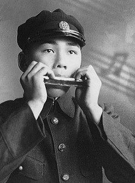
1927년 9월 29일(음력) 부산시 기장군 장안읍에서 아버지 박봉출과 어머니 김소순 슬하의 6남매 중 장남으로 태어난 박태준(朴泰俊)은 6세 때 아버지가 생업을 가진 일본으로 건너가 유년시절과 학창시절을 보내며 ‘식민지 아이로 지배자의 땅’에서 성장했다. 이 시기가 그의 인생에 끼친 가장 큰 영향은 크게 두 가지라고 할 수 있다. 하나는 이른바 ‘조센진’이라 불려야 했던 차별과 멸시에 대한 설움과 아픔이 오히려 그의 내면에 극일(克日)정신의 뿌리로 안착하고 그것이 ‘일류국가’를 향한 염원으로 승화되었다는 것이며, 또 하나는 일본에서 유년시절과 학창시절을 보내며 익히게 된 일본어와 일본문화가 뒷날에 국가와 포스코를 위하여 일하게 되는 때를 맞아 한일관계에서 어렵게 꼬인 일들을 풀어나가는 중요한 자산으로 활용하게 된다는 것이다. 청년 박태준은 1945년 도쿄의 와세다대학교 기계공학과에 입학한다. 그러나 머잖아 도쿄를 떠나 산골로 피난을 가게 된다.
그때 도쿄는 미군으로부터 폭격을 당하는 아비규환의 현장이었다. 그해 8월 15일 정오에 라디오 전파를 타고 흘러나오는 일본 왕의 무조건 항복선언을, 그는 산골에서 방공호 따위나 파는 생활을 하다가 듣게 되었다. 가슴의 밑바닥에서 뜨거운 희열이 북받쳐 올랐다. 일본인들의 틈바구니에서 “만세!”를 부를 수는 없었으나 주먹을 불끈 쥐고 눈물을 흘렸다. 해방 직후, 박태준은 가족들과 함께 배를 타고 귀국, 귀향을 했다.
서울에 가서 전공을 공부하고 싶었으나 학업의 길을 찾지 못한다. 일본에 들어가서 대학을 마치고 조국으로 돌아와 동량이 되겠다는 계획으로 혼자서 다시 도쿄에 들어가지만 1947년 대학을 중퇴하고 고향집으로 돌아와 그해 가을과 겨울을 고향집에거 칩거하며 인생의 길을 모색한다.
1948~1960
“짧은 인생을 영원 조국에” — 군인으로 살다 1948~1960
1948년 봄날, 드디어 박태준은 길을 잡는다. “건국(建國)에는 반드시 건군(建軍)이 필요하다”라는 결심을 굳히고 부산 국방경비대에 자원, 곧 서울 태릉의 남조선경비사관학교(육군사관학교)에 입교한다. 여기서 그는 인생을 통틀어 가장 중요한 인연의 인물인 박정희와 만나게 된다. 박정희 대위는 사관학교 2중대장으로서 탄도학 강의도 맡고 있었다. 탄도학 첫 시간. 고등수학이 요구되는 어려운 문제를 거뜬히 풀어내는 박태준 생도. 이 장면에서 두 사람은 처음 의미 있는 눈빛을 주고받았다.
그리고 육사 생도 6개월 동안에 박태준의 영혼을 건드린 사람이 바로 열 살 더 많은 스승이요 선배인 박정희였다. 소위로 임관한 박태준의 동기들은 이승만 초대 대통령의 취임식을 빛내는 장교들로 참석했다. 건국과 건군, 그의 젊은 꿈이 실현된 순간이었다. 미군 철수에 이은 1950년 6.25전쟁 발발. 이때 박태준은 38선(철원) 전방부대 중대장이었다. 개전 사나흘 만에 서울 미아리고개까지 후퇴하는 상황에서 동료 중대장 12명 중 10명이 전사한 가운데 요행히 운이 좋아 멀쩡히 살아남은 박태준은 ‘잔여병력을 한강 이남으로 철수시키라’는 명령을 받고 무사히 한강을 건넜다.
그리고 끝없는 후퇴의 연속이었다. 경주를 거쳐 포항 형산강까지 밀려난 풍전등화의 시간, 마침내 맥아더 장군이 인천상륙작전을 성공하고 북진의 명령이 떨어졌다. 후퇴의 속도만큼 빠른 속도로 진군한 박태준의 부대는 함경북도 청진시청에 태극기를 꽂고 더 북진한다. 그러나 중공군 개입으로 1.4후퇴가 단행된다. 그는 급성맹장염에 걸려 야전병원에서 수술한 몸으로 들것에 실린 채 함정에 올라 강릉으로 내려왔다.
1953년 휴전을 앞둔 때, 박태준의 마지막 전투는 화천수력발전소 방어작전이었다. 상대는 중공군이었다. 피아간 상당한 전사자를 냈지만 결국 임무를 완성한다.
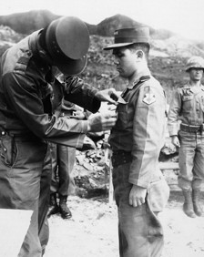
그리고 휴전 협정 타결. 가슴에 무공훈장을 셋이나 꽂은 박태준은 “짧은 인생을 영원 조국에”라는 신념을 가슴에 새긴다. 그것은 그의 일생에 걸쳐 한 치도 흐트러지지 않는 필생의 나침반이 된다.
포성이 멈춘 뒤 그는 육군대학에 입학, 수석으로 졸업하며 대통령 하사품인 금시계를 받고, 1954년 육군사관학교 교무처장에 부임했다. 이때 필생의 동지가 되는 후배장교 황경노와 처음 만나게 되고, 그해 12월 필생의 반려자가 되는 이화여대 출신의 부산 아가씨 장옥자와 결혼한다. 1956년 국방대학원을 졸업하고 국가정책담당 교수로 일하다가 국방부 인사과장으로 부임하지만 1군 참모장 박정희 장군의 권유를 받아 25사단으로 옮겨가 참모장, 연대장을 역임한다. 이때 유명한 ‘가짜 고춧가루 폐기’와 ‘부패 군납자 교체’라는 개혁을 일으켜 박정희의 더 깊은 주목을 받게 되며, 1958년 국군의 날 행사에서는 시가행진 부대를 지휘한다.
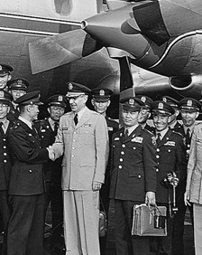
1959년 생애 처음 미국 연수를 다녀오게 되고, 1960년 2월초 부산군수기지사령부 사령관으로 부임하는 박정희의 요청에 따라 육군본부 인사처리과장 자리에서 박 사령관의 인사참모가 되어 부산으로 내려간다.
부산에서 박정희와 모든 시간을 함께 보내는 약 6개월, 그것은 두 인물을 완전한 신뢰관계로 묶어주는 시간이었다. 박정희는 부산에서 거사를 구체적으로 기획하고 있었던 것이다. 그리고 4.19혁명. 박태준은 부산시청 통제관으로서 부산지구계엄사령관 박정희를 완벽하게 보좌했다. 그해 여름의 박정희 좌천 후 박태준은 두 번째 미국 연수를 떠났다. 그리고 그해가 다 저물었다.
1961~1967
국가의 경제 일꾼으로 나서다 1961~1967
“자네를 거사명단에서 뺀 이유는 두 가지야. 내가 실패하여 형장의 이슬로 사라지는 경우를 생각했어. 그럴 때 자네는 우리 육군의 지도자로 남아야 한다는 것이고, 자네에게 내 처자(妻子)를 부탁하려고 했어.” 1961년 5월 16일 거사에 성공한 박정희가 이틀 뒤에 박태준을 따로 불러서 한 말이었다. 박태준은 그 전폭적이고 완전한 신뢰에 눈시울이 뜨끔했다. 그 자리에서 박정희는 그에게 비서실장을 맡겼다.
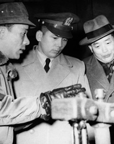
그해 육군 준장으로 진급한 박태준은 국가재건최고회의의 정치방면이 나날이 복잡해짐에 따라 비서실장 사임 건의를 올리고 상공담당 최고위원을 맡게 된다. 드디어 박정희가 박태준을 경제방면에 배치하여 박태준이 국가경제를 위해 헌신할 앞길이 열린 것이었다.
그해 연말에 그는 구라파통상사절단장으로 유럽을 다녀온다.
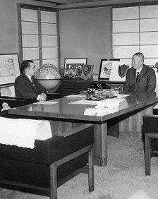
1963년 민선 대통령에 당선한 박정희는 국회의원도 장관도 싫다며 미국 유학을 가려고 하는 박태준을 붙잡아 한ㆎ일국교 정상화 사전작업을 위한 10개월 장도의 일본 특사로 보낸다. 이때 박태준은 일본의 전후 경제발전 실상을 목격하고 가슴에 울분을 품는다. 그해 12월 박태준은 대한중석 사장에 임명된다. 황경로, 안병화, 노중열, 장경환, 박종태, 홍건유 등 4년 뒤 영일만 모래사장으로 함께 이동할 동지들과 만난 박태준은 적자의 대한중석을 1년 만에 흑자체제로 바꾼다.
실질적인 경영수업, 그 탁월한 성과를 박정희가 지켜보고 있었다. 박정희가 박태준에게 공식적으로 ‘종합제철건설추진위원회 위원장’ 자리를 맡긴 때는 1967년 11월이다. 그러나 두 사람은 1965년부터 종합제철을 설계하고 있었다.
1968~1992
포항종합제철(POSCO)을 세계 최고로 키우다 1968~1992
1968년 4월 1일 포항종합제철주식회사(POSCO)가 탄생하면서 박태준은 창립 사장으로 취임했다. 창립요원 39명 중 고로를 직접 본 적 있는 사람은 사장뿐이었다. 기술과 경험이 없었다. 자본도 없었다. 무(無)의 상태였다.
자본(차관도입)과 기술은 KISA라 불린, 1966년에 조직된, 한국 종합제철소 건설을 맡기로 한 국제컨소시엄이었다. 미국, 영국, 서독(독일), 이탈리아, 프랑스 등 5개국의 8개 철강회사로 구성돼 있었다. 그러나 KISA는 한국의 종합제철은 시기상조로서 실패할 것이라는 세계은행(IBRD)의 평가를 근거로 1969년 2월 무렵부터 계약 불이행의 신호를 보내왔다. 포항에는 이미 제철소 부지 정지작업이 완공을 향해 가는 시점이었다. 그때 미국으로 들어가 KISA가 지원하지 않을 것을 간파한 박태준은 귀로의 하와이에서 대일청구권자금의 일부를 전용하자는 아이디어를 내고, 박정희 대통령의 승인을 받는다.
또다시 무산될 뻔한 종합제철 건설의 새로운 돌파구를 뚫은 사건이었다.
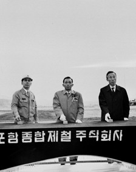
포철 1기, 연산 조강 103만톤 체제의 종합제철소는 1970년 4월 1일 대일청구권자금 및 일본 차관 약 1억2천만 달러와 일본기술단의 기술협력을 받아 착공 버튼을 누를 수 있었다. 박태준은 “조상의 혈세로 짓는 제철소이니 실패하면 우향우하여 영일만에 투신하자!”는 ‘우향우 정신’과 “철강 대업을 성공하여 나라에 이바지해야 한다”는 ‘제철보국 정신’을 불어넣으며 사명의식, 솔선수범, 선공후사, 미래전략이 혼연일체가 된 탁월한 리더십으로 포철을 이끌어나가고, 박정희는 그러한 박태준을 전폭적으로 신뢰하며 설비구매 등에 재량권을 백지 위임한 이른바 ‘종이마패’로써 포철을 정치적 외풍으로부터 철저히 보호해주면서 1968년부터 1979년 사이에 무려 13차례나 포철을 방문하는 각별한 애정과 관심을 보내주었다.
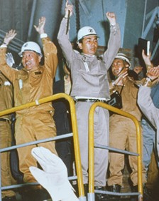
이것은 포철을 성공의 미래로 가게 하는 레일이 되고 포철 임직원들의 헌신을 한껏 끌어올리는 힘이 되기도 했다. 1979년 10월 26일 박정희의 갑작스런 서거 후, 박태준은 몸소 포철의 울타리 역할을 자임하면서 정계에 진출 하지만, 박정희가 마지막 선물처럼 남겨준 제2제철소 대임의 약속을 묵묵히 실천해 나갔다.
그것은 현재 세계에서 가장 효율적인 종합제철로 평가 받는 광양제철소 건설이었다. 4기로 나눠서 건설된 광양제철소의 1200만톤 체제가 완공된 것은 1992년 9월 30일이었다.
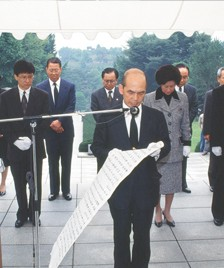
그날 박태준은 광양 준공식에 ‘포항제철 4반세기 종합준공’이란 경축 아치를 세웠다. 한국이 철강 2100만톤 시대를 열어젖힌 날이었다. 이튿날 아침에 서울 동작동 국립현충원 박정희 대통령의 묘소를 찾아가 ‘임무완수의 영혼보고’를 올리며 뜨거운 눈물을 흘린다.
그리고 민자당(여당) 최고위원 사임을 비롯해 정계은퇴를 선언하고, 당선이 확실시 되는 여당 대통령 후보 김영삼의 선거대책위원장 제의도 뿌리친 채 포항제철 회장 자리에서도 스스로 물러난다. 포항제철이 한국산업화의 견인차가 되었다는 것은 단적으로 말해, 70년대나 80년대에 자동차, 조선, 전자, 기계, 건설 등 한국의 모든 철강소비 업체들에게 당시 국제 철강시세보다 30% 내지 40%를 싸게 공급하여 그들이 세계시장의 경쟁력에서 우위를 점할 수 있는 기본체력을 제공했다는 사실이다. ‘좋은 품질의 철강재를 싼값에 안정적으로 공급’하고도 박태준의 포항제철은 첫해부터 시작된 흑자행진 속에서 세계 최강, 세계 최고의 철강회사로 성장했다. 더구나 그는 포철의 주식을 단 한 주도 받지 않음으로써 ‘국가와 국민을 위한 기업인’의 세계적 모범을 보여주었으며, 이것은 박태준을 위대한 기업인으로 칭송 받게 하는 또 하나의 요인이 되기도 했다. 한국 교육의 새 지평을 열다 박태준은 포항제철(POSCO) 최고경영자 25년에 걸쳐 포항과 광양에 유치원, 초, 중, 고교 14개교를 세워 순수한 포철의 자금으로 한국 일류 사학으로 키웠으며, 1986년에는 한국 최초의 연구중심 이공계 대학인 포항공과대학교(포스텍)을 세워 세계적인 명문대학으로 육성하는 데 정성과 열정을 바쳤다.
그것은 박태준의 인생과 정신에서 제철보국과 함께 양대 축을 형성한 ‘교육보국’의 실천이었다. 박태준의 그 원대한 교육보국 구상은 1970년 포철에 들어온 보험회사 리베이트 6000만 원이라는 돈에서 출발했다. 그 돈을 받은 그가 청와대로 들고 가서 대통령에게 “이것은 포철의 예산에서 빼낸 것이 아니고 공돈이니 통치자금에 보태 써시라”고 하자 박정희는 “임자 마음대로 써라”며 돌려줬고, 이에 박태준은 임원들과 협의해서 그 돈으로 교육보국의 모태가 되는 제철장학회를 설립했다. 그때가 1970년 11월. 포철이 처음 세운 교육기관은 포항의 효자제철유치원이었다.
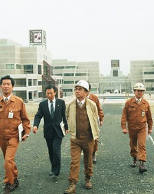
그러나 박태준은 그로부터 15년 만에 포스텍을 설립하고 20년 만에 포항방사광가속기 설립까지 시작한다.
박태준의 원대한 미래전략이 실현한 ‘포항제철의 교육’은 그대로 한국 교육의 새 지평을 여는 시대적 의의를 지니고 있었다.
1993~2000
해외유랑 후 국가부도위기 극복에 앞장서다 1993~2000
김영삼과의 정치적 갈등은 박태준을 1993년 봄날부터 1997년 봄날까지 4년여 동안 해외유랑의 길에서 떠돌게 했다. 그가 조국으로 돌아와 포항시 북구 국회의원 보궐선거에 출마할 의사를 밝힌 때는 1997년 5월. 그해 7월의 보궐선거에서 압승을 거둠으로써 정치적 명예회복과 마지막 국가봉사의 기반을 잡은 그는 자민련 총재로 취임해 그해 대선에서 김종필과 함께 김대중 후보와 연대했다. 박태준의 논리와 명분은 국가경제의 험난한 위기(IMF사태) 속에서 산업화세력과 민주화세력의 화해, 영남과 호남의 화합을 국가적 시대적 동력으로 만들어 희망찬 21세기를 열어가자는 것이었다.
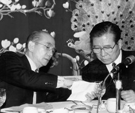
김대중의 신승은 국가부도 위기 속에서 대기업들의 구조조정과 각종 시스템 혁파 등 한국경제 대개조의 시절을 맞아 박태준에게 ‘재벌개혁의 전도사’라는 별명이 붙게 만들었다.
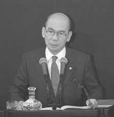
공동여당의 대표를 거쳐 2000년 1월 뉴밀레니엄의 첫 총리를 맡았다가 김대중과 김종필의 분열 속에서 그해 5월 정계은퇴와 공직사퇴를 동시에 선언한 박태준은 몇 년째 자신의 건강을 괴롭혀온 신병과 투쟁해야 하는 어려움을 맞고 있었다.
2001~2011
황혼의 박태준과 그의 마지막 계절 2001~2011
2001년 여름, 일흔네 살의 박태준은 미국 코넬대학 병원에서 대수술을 받았다. 소요시간 6시간 30분. 집도의가 갈비뼈 하나를 잘라내고 폐 밑에서 적출한 것은 3.2킬로그램의 물혹이었다. 그 뿌리 부위에는 규사 성분이 검출되었다. 영일만에서 들이마셨던 모래가 발병의 근원이라는 점을 추측하게 만드는 것이었다.
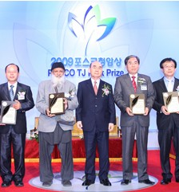
건강을 회복한 박태준은 귀국 후 포스코(2002년부터 바뀐 사명) 명예회장으로서 소일거리 수준의 대외활동을 하는 가운데 2008년부터는 포스코청암재단 이사장으로 봉직하기도 했다.
2004년 12월 박태준의 삶을 비평적으로 정리한 평전 『세계 최고의 철강인 박태준』(총 856쪽, 현암사)이 출간되었다. 이 책은 한국사회가 박태준을 정당하게 조명할 수 있는 계기를 제공했다. 이듬해에 그 책의 중국어판이 베이징에서 출간되었으며, 2010년 1월 『철의 사나이 박태준』이란 제목으로 그 책의 축약본이 베트남어판으로 출간되었다. 박태준의 건강에 ‘2001년 수술의 후유증’이 불길한 징조로 대두한 것은 2011년 봄날이었다. 잦은 기침과 간헐적인 각혈이 그것이었다.
그해 9월에 박태준은 포항제철 초기에 영일만 모랫바람 속에서 함께 고생했던, 퇴역한 현장 직원들과 재회하는 자리를 가졌다. , 이것이 행사의 제목이었고, 말 그대로 이뤄진 재회의 장소(포항시 지곡동 포스코한마당체육관)에 모여든 400여 명의 노인들은 체육관을 눈물의 호수로 만들었다.
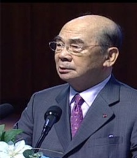
그 자리에서 박태준은 당부했다. 포스코의 종잣돈이 대일청구권자금이었다는 사실을 명심해야 거기서 고도의 윤리성이 나온다, 포스코는 박정희 대통령의 의지와 기획에 의해 탄생했으며 그분이 나를 신뢰했을 뿐만 아니라 완벽한 울타리가 돼 주었다는 사실을 잊지 말자, 조업과 건설 중에 유명을 달리한 동지들을 항상 기억하라. 그리고 그는 마지막으로 강조했다. “포스코의 역사 속에, 조국의 근대화 역사 속에 우리의 피와 땀이 별처럼 반짝이고 있다는 사실을 우리 인생의 자부심과 긍지로 간직합시다!” 2011년 12월 13일 오후 5시, 마침내 박태준은 숨을 멈추었다.
연세대 세브란스병원에서 두 번째 대수술을 받고 끝내 일어나지 못한 것이었다. 고인의 유택은 서울 동작동 국립현충원 국가유공자 묘역. 이승의 삶을 마친 박태준은 다시 박정희의 이웃으로 돌아갔다.